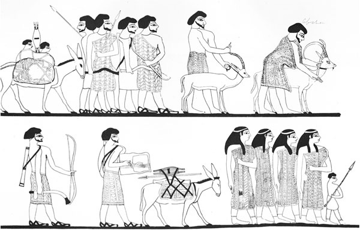
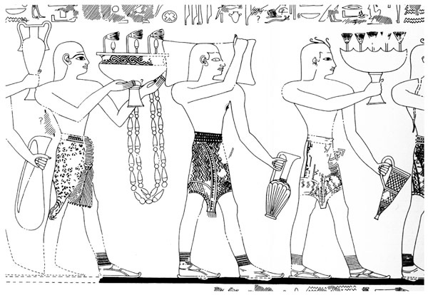

Verso l’anno 1477 a.C., nella città di Peru-nefer, sul delta del Nilo, nel Basso Egitto, molto vicino alle rive del Mar Mediterraneo, il faraone Thutmose III ordinò la costruzione di un grande palazzo ornato da affreschi molto elaborati. Per dipingere gli affreschi furono ingaggiati artisti minoici provenienti dalla lontana Creta, che si trovava a ovest, nel Grande Verde (come era chiamato il Mediterraneo). Dipinsero immagini mai viste prima in Egitto (strane scene di uomini che si issavano su tori) con il colore applicato sull’intonaco ancora fresco: uno stile al fresco, in modo che i colori diventavano parte della parete stessa. Si trattava di una tecnica e di un’iconografia che in tutta evidenza era stata appresa a Creta, nell’Egeo. Le immagini dipinte in questo modo erano di moda non solo in Egitto, ma anche in palazzi che si trovavano un po’ dappertutto sulla costa, dalla terra settentrionale di Canaan fino al delta dell’Egitto, in luoghi oggi noti come Kabri in Israele, Alalakh in Turchia, Qatna in Siria e Dab’a in Egitto.1
Peru-nefer, la città sul delta, può essere identificata con la moderna Tell ed-Dab’a. È un sito dove, sin dal 1966, l’austriaco Manfred Bietak e la sua équipe dirigono i loro scavi archeologici. La città in passato era nota come Avaris, capitale degli Hyksos, i temuti invasori dell’Egitto, che governarono gran parte del paese dal 1720 circa al 1550 a.C. Dopo la sua conquista da parte dell’antenato di Thutmose, il faraone egizio Kamose, verso il 1550 a.C., Avaris fu ribattezzata Peru-nefer, e divenne una metropoli egizia di grande importanza.
Nella sua impresa di scavo di una splendida città del passato, ora sepolta da metri di sabbia e di detriti, Bietak, in quattro decenni, ha riportato alla vita sia la capitale degli Hyksos sia l’antica metropoli egizia. Sono stati anche trovati gli straordinari affreschi dipinti dai Minoici, o forse da artigiani locali formati presso la scuola minoica, che datano all’inizio della Diciottesima Dinastia (circa nel 1450 a.C.).2 È un ottimo esempio di quel mondo internazionale che cominciava a crearsi nel Mediterraneo orientale e nell’Egeo dopo l’espulsione degli Hyksos dall’Egitto.
Gli Hyksos avevano invaso l’Egitto per la prima volta nel 1720 a.C., un quarto di millennio prima dell’epoca di Thutmose III, e vi erano rimasti per circa duecento anni, fino al 1510 a.C. All’epoca della loro invasione, l’Egitto era una delle potenze più stabili del Medio Oriente antico. Le piramidi di Giza, costruite durante la Quarta Dinastia, nel periodo dell’Antico Regno, esistevano già da mille anni. Manetho, un sacerdote egizio che visse e scrisse durante il più tardo periodo ellenistico nel III secolo a.C., identificava gli Hyksos con i «re pastori», una traduzione errata della frase egizia hekau khasut, che in realtà significa «capi di terre straniere». Stranieri lo erano davvero, perché gli Hyksos erano semiti, migrati in Egitto dalla terra di Caanan, l’ampia regione oggi occupata da Israele, Libano, Siria e Giordania. Vediamo immagini di questi semiti in Egitto già nel XIX secolo a.C., per esempio nella pittura murale di un sepolcro egizio a Beni Hasan, dove sono rappresentati mercanti e commercianti «asiatici» che importavano le loro merci nel paese.3
L’invasione degli Hyksos provocò la caduta del Regno Medio (2134-1720 a.C. circa). Il loro successo fu probabilmente il risultato di un vantaggio nella tecnologia militare e nella capacità di sferrare l’attacco iniziale: possedevano infatti archi perfezionati in grado di lanciare le frecce molto più lontano degli archi tradizionali. Avevano anche carri condotti da cavalli, di cui non c’era ancora l’equivalente in Egitto.
Dopo la conquista, gli Hyksos governarono l’Egitto, soprattutto dalla capitale Avaris, sul delta del Nilo, durante il cosiddetto Secondo periodo intermedio (dinastie quindici-diciassette) per quasi duecento anni, dal 1720 al 1550 a.C.4 È uno dei pochi momenti, tra il 3000 e il 1200, in cui l’Egitto fu retto da stranieri.
Storie e iscrizioni con una data approssimativamente vicina a questo periodo – circa il 1550 a.C. – raffigurano alcune delle battaglie che erano state combattute tra gli Egizi e gli Hyksos. In particolare abbiamo una storia che riferisce di un disaccordo tra due governanti, La disputa tra Apofi e Seqenenra. In questa narrazione, quasi sicuramente apocrifa, il re hyksos Apofi si lamenta di essere stato tenuto sveglio per una notte intera a causa del rumore di un ippopotamo che si trovava in uno stagno del re egizio Seqenenra, che regnava in questo stesso periodo, ma in un’altra parte dell’Egitto. La rimostranza era assurda perché parecchie centinaia di miglia separavano le due corti reali; una si trovava nell’Alto Egitto e l’altra nel Basso Egitto. Il re hyksos non poteva aver sentito l’ippopotamo, indipendentemente da quanto forte gridasse.5 Tuttavia, la mummia di Seqenenra è stata ritrovata dagli archeologi e, dalle ferite sul suo cranio, causate da un’ascia da combattimento, è chiaro che morì in battaglia. Si trattava della battaglia con gli Hyksos? Non lo sappiamo con certezza; tuttavia è possibile che Apofi e Seqenenra combatterono l’uno contro l’altro, che si sia trattato o meno a causa dell’ippopotamo.

Figura 4
Gli «asiatici» a Beni Hasan (da Newberry 1893, tavv. XXX/XXXI. Per gentile concessione della Egypt Exploration Society).
Abbiamo anche un’iscrizione che risale al faraone Kamose, l’ultimo re della Diciassettesima Dinastia. All’epoca, Kamose governava dalla sua dimora a Tebe, nell’Alto Egitto. Egli fornisce dettagli sulla vittoriosa battaglia finale contro gli Hyksos, che definisce «asiatici», scrivendo quanto segue, nel 1550 a.C.:
Navigavo a nord nel pieno della mia forza per respingere gli Asiatici ... con il mio coraggioso esercito che era davanti a me come una fiamma di fuoco e ... con gli arcieri in prima linea per distruggere le loro postazioni ... Ho trascorso la notte sulla mia nave, con l’animo sereno; e quando si levò il giorno fui sopra di lui come un avvoltoio. Quando fu il momento della colazione, riuscii a sopraffarlo distruggendo le sue mura e massacrando il suo popolo, e obbligai sua moglie a scendere sulla riva del fiume. Gli uomini del mio esercito agirono come un leone con il bottino ... oggetti, bestiame, grasso, miele ... spartendosi i possessi con animo lieto.
Kamose parla anche del destino di Avaris:
Per quanto riguarda Avaris sui Due Fiumi, la devastai senza gli abitanti; distrussi le loro città e bruciai le case fino a renderle per sempre rovine incandescenti, a causa della distruzione che avevano portato nel mezzo dell’Egitto; essi avevano accettato di rispondere alla richiesta degli Asiatici, (che) avevano lasciato all’Egitto le loro donne!6
Con questo gli Egizi espulsero gli Hyksos dalla loro terra, e loro ritornarono a Retenu (uno degli antichi nomi egizi della Siria e di Israele attuali, la stessa grande area nota anche agli Egizi come Pa-ka-na-na, ovvero Canaan). Gli Egizi, nel frattempo stabilirono la Diciottesima Dinastia, iniziata da Ahmose, figlio di Kamose, che inaugurò quello che noi chiamiamo il periodo del Nuovo Regno.
Avaris e il resto dell’Egitto furono ricostituiti durante questo periodo e Avaris stessa fu ribattezzata. All’epoca di Hatshepsut e Thutmose III, circa sessanta anni dopo – nel 1500 a.C. – era di nuovo una città prospera, conosciuta con il nome di Peru-nefer, ornata di palazzi decorati in stile minoico, con rappresentazioni di battaglie con i tori e altre scene evidentemente più abituali a Creta che sul delta del Nilo. Un archeologo ha ipotizzato addirittura un matrimonio regale, che avrebbe avuto luogo tra un re egizio e una principessa minoica.7 Esistono sicuramente numerosi faraoni della Diciottesima e Diciannovesima Dinastia che hanno sposato principesse straniere, soprattutto per cementare legami diplomatici o per trattare con una potenza straniera, come vedremo, ma, per spiegare la presenza delle pitture murali minoiche in Egitto, non è necessario evocare matrimoni combinati a livello politico, dal momento che c’è un’altra prova, del tutto indipendente, che attesta i contatti tra Mediterraneo orientale, Egitto e, in questo caso, l’Egeo.
Da una grande quantità di dati, dagli artefatti archeologici e dalle testimonianze testuali e pittoriche, è chiaro che i Minoici di Creta erano già stati in contatto con diverse aree del Medio Oriente antico molto prima dei rapporti stabiliti con i faraoni del Nuovo Regno egizio. Ad esempio abbiamo trovato oggetti e manufatti di stile minoico che erano stati trasportati nel XVIII secolo a.C., quasi quattromila anni fa, attraverso il Mar Egeo e il Mediterraneo orientale fino alla Mesopotamia, la terra tra i due fiumi, Tigri ed Eufrate.
La documentazione di questo antico commercio è stata trovata nell’antico sito di Mari, sul lato occidentale del fiume Eufrate, in quella che è ora la moderna Siria, dove, negli anni trenta, gli archeologi francesi hanno portato alla luce un patrimonio di più di ventimila tavolette d’argilla. Gli archeologi erano stati portati su quel sito dagli abitanti del luogo che, accidentalmente, avevano trovato quello che a prima vista era parso un uomo senza testa e che poi si era rivelato essere una statua di pietra, una delle tante presenti nel sito, con un’iscrizione che la identificava come il re dell’antica città di quel luogo.8 Le tavolette, incise con testi scritti in antico accadico, provenivano da un archivio di corrispondenze reali e altre cronache più mondane che appartenevano ai re di Mari, tra i quali è particolarmente importante Zimri-Lim, che governò nel 1750 a.C. circa. Riferiscono ogni sorta di informazioni pertinenti all’amministrazione del palazzo e all’organizzazione del regno, come pure aspetti della vita quotidiana dell’epoca.
Una tavoletta riguarda il ghiaccio che Zimri-Lim utilizzava per le sue bevande estive, a base di vino, birra e bibite d’orzo fermentate, addolcite con succo di melograno o con un tipo di anice simile alla liquerizia. Sappiamo che aveva ordinato che venisse costruita una casa del ghiaccio sulle rive dell’Eufrate, che doveva essere utilizzata specificamente per immagazzinare il ghiaccio raccolto durante l’inverno sulle montagne innevate, per poterlo poi utilizzare nei caldi mesi estivi. Ribadiva che nessun re in precedenza aveva mai costruito qualcosa di simile e può darsi che avesse ragione; tuttavia è bene ricordare che l’uso del ghiaccio nelle bevande non era nuovo nella regione, come dimostra il fatto che un re dovette rammentare a suo figlio di far pulire il ghiaccio ai servitori prima di metterlo nelle bevande: «Ordina loro di andare a prendere il ghiaccio. Digli di lavarlo e di nettarlo dagli sterpi, dallo sterco e dalla sporcizia!».9
Gli archivi di Mari contengono una ricca quantità di rapporti commerciali e di cronache che testimoniano i contatti con altre regioni del Mediterraneo e del Medio Oriente, con particolare menzione degli articoli esotici che venivano importati. Da queste tavolette sappiamo che c’era l’abitudine di scambiare doni tra i sovrani di Mari e quelli delle altre città e degli altri regni, e che i re condividevano tra loro i servizi di medici, artigiani, tessitori, musicisti e cantanti.10
Tra gli oggetti esotici importati, registrati sulle tavolette di Mari, c’era una daga e altre armi in oro, incastonate di lapislazzuli preziosi, come pure stoffe e tessuti «fatti alla moda di Caphtor».11 Caphtor (o Kaptaru) era il nome mesopotamico e cananeo per Creta, che gli Egizi più tardi avrebbero chiamato Keftiu. Gli articoli avevano compiuto un lungo percorso da Creta, acquisendo quello che oggi si chiama «valore aggiunto della distanza», che si somma al valore effettivo determinato dalla manodopera e dal materiale di costruzione.
Abbiamo anche una tavoletta che registra una situazione anomala, in cui è scritto che Zimri-Lim, re di Mari, mandò da Creta un paio di scarpe di fattura minoica in dono al re Hammurabi di Babilonia. Il testo dice semplicemente «Un paio di scarpe di cuoio nello stile di Caphtor, che Bahdi-Lim (un ufficiale) portò al palazzo di Hammurabi, re di Babilonia, ma che venne restituito».12 Non sono spiegati i motivi per cui le scarpe furono restituite. Forse molto semplicemente non calzavano al piede del sovrano. Il codice di Hammurabi – che è il primo a contenere il detto «occhio per occhio, dente per dente», più tardi reso famoso nel Vecchio Testamento – non cita pene particolari per la restituzione di regali. È tuttavia alquanto sorprendente che Hammurabi abbia rifiutato il paio di scarpe di cuoio, indipendentemente dal fatto che calzassero o meno, perché è probabile che all’epoca fossero rare e inusuali nelle sue terre, considerata la distanza tra Creta e la Mesopotamia, che è poi la stessa che c’è ora tra la Grecia moderna e la Siria/Iraq. Un viaggio del genere sicuramente non veniva fatto alla leggera e certamente veniva compiuto per tappe, con mercanti o commercianti diversi che trasportavano le merci per tratte successive del viaggio. D’altra parte, lo scambio di doni tra i sovrani dello stesso rango era una pratica corrente nel Medio Oriente del secondo millennio a.C.13 In questi casi, gli articoli erano portati direttamente da emissari del re, in quelle che oggi si chiamerebbero missioni diplomatiche.
Da quanto detto sopra, è chiaro che i Minoici di Creta erano in contatto con numerose terre del Medio Oriente antico durante l’Età del Bronzo media e tarda, almeno a partire dal 1800 a.C. Nelle lettere di Mari c’è perfino menzione dei Minoici e di un probabile interprete minoico (o un interprete per i Minoici), presente sul sito di Ugarit, nel nord della Siria, nella prima metà del XVIII secolo a.C., in cui si riceveva lo stagno che da Mari era inviato a ovest.14 Tuttavia, sembra che ci sia stata una relazione particolare con l’Egitto all’inizio del XV secolo, durante l’epoca di Hatshepsut e poi di Thutmose III: è il motivo per cui intendiamo cominciare da questo punto preciso.
La civiltà minoica è stata così battezzata dall’archeologo Sir Arthur Evans all’inizio del Novecento. Non sappiamo con certezza come essi chiamassero se stessi, anche se sappiamo che gli Egizi, i Cananei e i popoli mesopotamici avevano tutti un nome per definirli. Non sappiamo neppure da dove provenissero, ma le nostre supposizioni propendono soprattutto per l’Anatolia.
Sappiamo che fondarono una civiltà a Creta durante il terzo millennio a.C., che durò fino al 1200 a.C. Verso la metà di questo periodo, nel 1700 circa, l’isola fu sconvolta da un terremoto devastante, che rese necessaria la ricostruzione dei palazzi a Cnosso e in altre località. Ma i Minoici si ripresero in fretta e prosperarono ancora come civiltà indipendente, fino a quando, a partire dal continente greco, i Micenei invasero l’isola nella seconda metà del secondo millennio; da quel momento Creta continuò sotto il governo miceneo, fino a quando tutto crollò, nel 1200 a.C.
Sir Arthur Evans cominciò gli scavi archeologici a Creta dopo aver scoperto la fonte delle cosiddette galopetres, «pietre di latte», che aveva trovato al mercato di Atene. Le donne greche che avevano partorito o stavano per partorire indossavano queste «pietre di latte», che portavano inciso un simbolo che Evans non aveva mai visto prima, ma che riconobbe come un segno di scrittura. Le si faceva risalire a un sito sepolto di Cnosso (la collina di Kefala), vicino all’attuale Heraklion, a Creta – un sito che Heinrich Schliemann, che diresse gli scavi di Troia, aveva cercato inutilmente di acquistare per operarvi uno scavo. Evans riuscì a comprare la terra e cominciò a scavare nel marzo del 1900. Continuò a scavare per i decenni seguenti, consumando tutto il proprio patrimonio personale per realizzare il suo progetto, pubblicando alla fine i suoi risultati in una grandiosa opera di svariati volumi, The Palace of Minos at Knossos.15
Aiutato dal suo fidato assistente scozzese Duncan Mackenzie,16 Evans portò ben presto alla luce quello che sembrava essere un palazzo reale. Senza indugio battezzò la civiltà da poco scoperta «minoica», dal re Minosse della leggenda greca, che si dice governò Creta nei tempi antichi (leggenda che è completata da un Minotauro – mezzo uomo e mezzo toro – nelle profondità sotterranee e labirintiche del palazzo). Evans trovò numerose tavolette di argilla e altri oggetti, con segni di scrittura, sia in Lineare A (non ancora decifrata) sia in Lineare B (una prima forma di scrittura greca, probabilmente portata a Creta dai Micenei), ma non scoprì mai il nome vero di questo popolo che, come abbiamo già detto, rimane ancora oggi sconosciuto, a dispetto di più di un secolo di scavi assidui, non solo a Cnosso, ma anche in numerosi altri siti di Creta.17
A Cnosso, Evans portò alla luce numerosi oggetti importati dall’Egitto e dal Medio Oriente, come un coperchio in alabastro che aveva inciso il seguente geroglifico: «Il buon dio, Seweserense, figlio di re, Khyan».18 Khyan, uno dei più noti re Hyksos, aveva governato durante i primi anni del VI secolo a.C. I suoi oggetti personali sono stati trovati un po’ dappertutto nel Medio Oriente antico, ma come questo coperchio sia giunto a Creta è ancora un mistero.
Di grande interesse è anche un vaso egizio di alabastro trovato molti anni dopo, nel corso di un altro scavo archeologico in una tomba del sito di Katsamba, a Creta, una delle città portuali della costa settentrionale collegate a Cnosso. Vi è iscritto il nome regale del faraone Thutmose III, «il dio buono Men-kheper-re, figlio di re, Thutmose perfetto nelle trasformazioni». È uno dei pochi oggetti con il suo nome che sono stati rinvenuti nell’Egeo.19
Tucidide, storico greco del V secolo a.C., sosteneva che i Minoici in quel periodo avevano una flotta e dominavano i mari (Tucidide, Guerra del Peloponneso, 1,3-8). Per gli studiosi precedenti, questa dominazione era nota come «talassocrazia minoica», da kratia che significa potere, comando, e thalassos, che significa mare. Anche se la supremazia navale minoica viene ora rimessa in discussione, ci sono citazioni che riguardano «navi Keftiu» nei resoconti egizi, ma non è chiaro se si trattasse di navi cretesi, oppure dirette a Creta o, ancora, costruite alla maniera minoica.20
Il successore di Evans nella direzione degli scavi, John Devitt Stringfellow Pendlebury, era molto interessato ai possibili rapporti tra l’Egitto e Creta; aveva diretto gli scavi del sito egizio di Amarna (la capitale di Akhenaton, di cui parleremo ancora), oltre che a Cnosso. Pendlebury pubblicò infine una monografia sull’argomento, intitolata Aegyptiaca, in cui raccoglieva ed elencava tutti gli oggetti di importazione egizia trovati a Cnosso e altrove sull’isola. Purtroppo fu poi ucciso dalle truppe paramilitari tedesche, durante l’invasione di Creta nel 1941.21
Evans e Pendlebury trovarono altri oggetti importati a Cnosso, e nei decenni seguenti divenne sempre più evidente che i Minoici erano stati attivi sia nell’importazione sia nell’esportazione, creando un’industriosa rete commerciale con molte regioni straniere oltre all’Egitto. Per esempio, sono stati trovati in diversi siti di Creta sigilli cilindrici provenienti dalla Mesopotamia e grosse anfore per lo stoccaggio di alimenti provenienti dalla regione di Canaan, in contesti relativi alla media e tarda Età del Bronzo. Terrecotte di foggia minoica e altri oggetti rifiniti (o perlomeno riferimenti a essi) sono stati trovati in diverse località di Egitto, Israele, Giordania e Cipro, e ancora fino alla Siria e all’Iraq.
Dobbiamo rammentare che le merci menzionate rappresentano soltanto una piccola parte di quelle che si trovavano un tempo a bordo delle navi che solcavano il Mediterraneo: molti dei prodotti commerciati durante la tarda Età del Bronzo erano infatti deperibili ed è impossibile che abbiano lasciato resti identificabili. Cereali, vino, spezie, profumi, legno e tessuti non hanno praticamente lasciato traccia. I materiali grezzi come l’avorio, le pietre preziose come i lapislazzuli, l’agata e la corniola, e metalli come l’oro, il rame e lo stagno, erano trasformati in oggetti, armi e gioielli. Quindi quasi tutte le prove materiali delle rotte commerciali e dei contatti internazionali sono andate perdute, si sono dissolte o comunque sono scomparse. Ma talvolta esiste ancora un cenno all’esistenza di derrate deperibili nei testi scritti o nelle raffigurazioni pittoriche che sono sopravvissute fino a noi. Le pitture, le iscrizioni e i riferimenti letterari sono tracce meno labili per capire i rapporti tra i popoli, ammesso che siano interpretati in modo corretto. Per testimoniare concretamente l’esistenza di una fitta rete diplomatica, commerciale e mercantile nel XVI e XV secolo a.C., le pitture trovate in molte tombe egizie hanno un valore inestimabile; spesso rappresentano popoli stranieri dell’epoca delle monarchie dei faraoni dei nuovi regni, da Hatshepsut ad Amenofi III.22
Durante il regno di Hatshepsut, nel XV secolo a.C., fu costruita la prima tomba nelle cui pitture murali fa la sua comparsa il popolo egeo. In questi affreschi sono raffigurati i Minoici, spesso accompagnati da oggetti e iscrizioni che dimostrano inequivocabilmente la provenienza da Creta. Per esempio, nella tomba di Senemut, architetto, consigliere e forse amante di Hatshepsut, è messa in scena una missione di Egei: sei uomini trasportano vasi di metallo di manifattura chiaramente identificabile.23
In un altro dipinto, nella tomba di Rekhmira, visir di Thutmose III (1450 circa a.C.), vediamo uomini vestiti con i tipici gonnellini in stile egeo, che trasportano oggetti inequivocabilmente provenienti da quell’area. Vicino a questi personaggi c’è un’iscrizione parzialmente intatta: «Vengono in pace dai capi di Keftiu e dall’“Isola in mezzo al mare”, si inchinano e abbassano il capo alla potenza di Sua Maestà il re dell’Alto e del Basso Egitto».24 Si tratta della rappresentazione di una delegazione egea in Egitto, una delle tante che sono state dipinte nelle tombe egizie di questo periodo.

Figura 5
La tomba di Rekhmira con l’immagine dei popoli egei (da Davies 1943, tav. XX. Per gentile concessione del Metropolitan Museum of Art).
Le popolazioni egee non sono le uniche a essere raffigurate nella tomba di Rekhmira; in altre scene, sia nella parte superiore sia in quella inferiore, sono rappresentati emissari dalla terra di Punt, dalla Nubia e dalla Siria, ciascuno con la propria iscrizione. Per quanto non sia stato provato, sembra che rappresentino un avvenimento significativo che ebbe luogo durante il regno di Thutmose III: i delegati o i mercanti dall’Egeo sono solo alcuni esempi della folla multinazionale che si era riunita o che era stata convocata. In questo caso forse di tratta della festa di Sed, celebrata per la prima volta dal faraone dopo trent’anni di regno, e in seguito in modo irregolare; nel caso di Thutmose III, sappiamo che indisse almeno tre di queste grandi festività, il che non è sorprendente, visto che regnò per cinquantaquattro anni.25
In tutto, ci sono circa quattordici tombe risalenti al regno di Hatshepsut o a quello di Thutmose III, che appartenevano tutte a ufficiali e consiglieri di alto rango; nelle pitture vengono rappresentate delegazioni di stranieri che visitano l’Egitto, tra cui abitanti dell’area dell’Egeo, della Nubia, della regione di Canaan, e tutti esibiscono prodotti stranieri.26 Nelle nove tombe che risalgono più specificamente all’epoca di Thutmose III, spesso vediamo raffigurazioni di stranieri che offrono doni diplomatici, presentano i tributi di prammatica o partecipano alla spedizione regale che Thutmose III mandò in Libano con l’ordine di acquistare un cedro.27
Keftiu, uomini di Keftiu e navi di Keftiu sono nomi che, a partire da questo periodo, vengono citati in una miriade di altri contesti, come le iscrizioni su templi e le annotazioni su papiri di area egizia. Tra i più interessanti c’è un papiro del trentesimo anno del regno di Thutmose (il 1450 a.C. circa) che cita numerose «navi di Keftiu», riferendosi all’importazione di materiale per la flotta egizia. «Dato all’artigiano [nome dell’uomo] questo legname da copertura per una “nave di Keftiu” su sua commissione» e «Dato all’artigiano Ina per l’altra ... “nave di Keftiu”».28 Analogamente, un’iscrizione su un muro del tempio di Amon a Karnak, del trentaquattresimo anno di Thutmose III, cita di nuovo le «navi di Keftiu».29
Anche se non si sa con certezza se queste navi provenivano da Keftiu (cioè se erano navi minoiche) oppure se erano dirette a Keftiu (e quindi erano navi egizie), è chiaro che, all’epoca di Thutmose III, esistevano contatti, probabilmente diretti, tra la Creta minoica e il Nuovo Regno d’Egitto. Grazie ai venti prevalenti, un’imbarcazione a vela (che sia oggi o 3400 anni fa) può viaggiare con relativa facilità dalle rive meridionali di Creta fino a Marsa Matruh sulla costa settentrionale dell’Egitto, e da qui nel delta del Nilo. Il viaggio di ritorno, invece, considerati i venti contrari e le correnti avverse, non è facile, ma in alcuni periodi dell’anno è possibile. Era anche possibile veleggiare con un moto antiorario, dirigendosi dall’Egitto alla terra di Canaan e a Cipro, poi in Anatolia e a Rodi, e da qui a Creta, alle isole Cicladi e alla terraferma greca, per poi ritornare di nuovo a Creta e proseguire verso sud, alla volta dell’Egitto.
Dal dipinto e dall’iscrizione nella tomba di Menkheperreseneb, primo profeta di Amon,30 è chiaro che gli Egizi conoscevano l’esistenza dei membri della casa reale minoica e li consideravano di pari rango rispetto a quelli di altri paesi stranieri. Sulle pareti della tomba contempliamo il «principe di Keftiu» (Creta) in compagnia del principe degli Ittiti (dall’Anatolia), il principe di Tunip (probabilmente in Siria) e il principe di Qadeš (in Siria). Il titolo utilizzato per definire i personaggi, wr, che significa «principe» o «capo», è lo stesso in tutti i casi.31 Il dipinto suggerisce le visite in Egitto di membri della casa reale in varie circostanze, forse anche in un’occasione molto speciale. Erano giunti tutti nello stesso periodo (forse si tratta di una prospettiva diversa sullo stesso avvenimento dipinto nella tomba di Rekhmira) oppure in momenti separati? Non possiamo esserne sicuri, ma è interessante considerare la possibilità che i grandi protagonisti della tarda Età del Bronzo si fossero uniti in occasione di un grande evento in Egitto, proprio come i dignitari si riuniscono oggi per un matrimonio della casa reale inglese o per una conferenza del G8.
Lo stesso termine wr (principe o capo) è anche usato altrove da Thutmose III, all’inaugurazione del quarantaduesimo anno dei suoi Annali, dove cita il «principe di Tanaja», la parola egizia per il continente greco. C’è anche una lista degli oggetti che provenivano dall’Egeo, compreso un vaso d’argento dell’artigianato di Keftiu e quattro ciotole con manici d’argento. È assai interessante il fatto che vengono chiamati inw, un termine di solito tradotto come «tributo», ma che probabilmente in questo contesto significa «dono».32 Essere impegnati in una «normale» attività commerciale potrebbe essere stato considerato inadeguato per la dignità del re, mentre scambiarsi dei «doni» con i propri pari (o quasi pari) era perfettamente accettabile. Ne discuteremo nel prossimo capitolo, quando parleremo del commercio internazionale che, nel XIV secolo a.C., veniva travestito da scambio di doni.
Il regno di Hatshepsut, appena precedente a quello di Thutmose III, aveva rapporti non solo con l’Egeo, ma anche con altre regioni del Medio Oriente antico. Fu Hatshepsut, la più giovane figlia di Thutmose I e lei stessa faraone, che inaugurò la Diciottesima Dinastia aprendo la strada ai rapporti globalizzati e che, servendosi della diplomazia anziché della guerra, impose il prestigio egizio a livello internazionale. Era figlia del faraone Thutmose I e della regina Ahmose, quindi possedeva sangue reale, anche se il padre raggiunse lo statuto regale soltanto tramite il matrimonio.
Hatshepsut sposò il suo fratellastro, Thutmose II, in un matrimonio combinato inteso ad aiutare il ragazzo, il quale aveva sangue reale soltanto per metà, perché sua madre non era regina, bensì donna di corte di rango minore. Il matrimonio con Hatshepsut gli accordò una legittimità maggiore di quella che avrebbe potuto raggiungere altrimenti. Dall’unione nacque una figlia ma non un figlio, il che avrebbe potuto avere conseguenze disastrose per la dinastia. Thutmose II generò tuttavia un maschio con una delle donne del suo harem, e il bambino venne educato come Thutmose III, destinato a seguire il padre sul trono. Quando Thutmose II morì accidentalmente, il figliolo non aveva ancora l’età per governare da solo. Hatshepsut quindi diventò temporaneamente reggente in suo nome. Quando giunse il momento di restituirgli il trono, rifiutò di farlo e governò per più di vent’anni, mentre Thutmose III aspettava dietro le quinte (probabilmente con impazienza).33
Durante questi due decenni, Hatshepsut cominciò a indossare la tradizionale falsa barba faraonica, altri accessori di prammatica e vestiti maschili, con un’armatura per dissimulare il seno e gli attributi femminili. La trasformazione si può vedere nelle statue che la celebrano, erette a Deir el-Bahari, il suo tempio mortuario. Cambiò anche il nome, prendendone uno con una desinenza maschile anziché femminile, per cui diventò «Sua Maestà Hatshepsu».34 In altre parole governò come un uomo, un vero faraone maschio, non semplicemente come una reggente. Come risultato, ora è considerata una delle donne più illustri dell’antico Egitto, assieme a Nefertiti e Cleopatra. Sembra che Hatshepsut non si sia mai sposata dopo la morte di Thutmose II, ma probabilmente il suo assistente e architetto Senemut fu il suo amante; si trova una sua effigie incisa, forse in segreto, sul tempio funerario di Hatshepsut a Deir el-Bahari, di cui egli stesso aveva diretto il progetto di costruzione.35
Questa sovrana eccezionale è associata a spedizioni commerciali pacifiche inviate in Fenicia (il moderno Libano), alla ricerca di legname, e nel Sinai, alla ricerca di rame e di turchesi,36 ma la delegazione più celebre fu quella inviata alla terra di Punt durante il suo nono anno di regno, il cui resoconto è iscritto sulle pareti di Deir el-Bahari. Gli studiosi non conoscono la localizzazione esatta della terra di Punt, ancora oggetto di discussioni. Alcuni eminenti accademici la situano da qualche parte nella regione tra Sudan, Eritrea ed Etiopia, mentre altri la collocano altrove, di solito lungo le coste del Mar Rosso, nella regione dove si trova l’odierno Yemen.37
La spedizione di Hatshepsut non fu la prima a essere organizzata dall’Egitto alla terra di Punt, né sarebbe stata l’ultima. Molte furono preparate durante il periodo del Medio Regno, e più tardi, verso la metà del XIV secolo a.C., anche Amenofi III mandò una sua delegazione. Tuttavia soltanto nella cronaca di Hatshepsut è raffigurata la regina di Punt, chiamata «Eti», secondo l’iscrizione che l’accompagna. L’effigie della regina straniera ha provocato molti commenti a causa della sua bassa statura, della colonna vertebrale incurvata, dei rotoli di grasso e del sedere imponente, descrizione che corrisponde alla steatopigia (condizione del corpo in cui l’addome è abbondante e le natiche e le cosce massicce e sporgenti). Ci sono anche palme, animali esotici e altri dettagli che sottolineano la lontananza e ci sono immagini delle navi che trasportano gli Egizi alla terra di Punt e ritorno, complete di alberi maestri e di tutte le attrezzature.
Nel trentatreesimo anno del suo regno, un po’ dopo il 1450 a.C., Thutmose III mandò una delegazione alla terra di Punt, come è debitamente registrato nei suoi Annali; un’altra spedizione nella stessa regione venne inviata nell’anno 38.38 Ci sono alcuni esempi, tra cui le spedizioni che inviò in Libano per comperare dei cedri, da cui possiamo dedurre l’esistenza di un fiorente commercio tra l’Egitto e una regione straniera durante il regno di Thutmose III, e sospettiamo che gran parte del «tributo» (inw) raffigurato nelle scene di nobili del suo regno fosse in realtà un commercio vero e proprio.
Tra le regioni remote con cui parrebbe che l’Egitto fosse in relazione commerciale sotto Thutmose III e dalle quali egli registrò di avere ricevuto inw in tre diverse occasioni, c’era una regione nota agli Egizi come Isy, che probabilmente può essere identificata con la coalizione di città-stato situata nell’Anatolia nord-occidentale (la moderna Turchia) e nota come Assuwa, oppure con l’Alashiya, il nome con cui era chiamata Cipro nell’Età del Bronzo. Gli scribi di Thutmose citano Isy almeno quattro volte in diverse iscrizioni, accompagnata dall’appellativo Keftiu: «Ti lascerò far colpo sull’Occidente, Keftiu e Isy sono impressionati e voglio che vedano Sua Maestà come un giovane toro, coraggioso di cuore, con corna affilate, a cui non ci si può avvicinare».39 Negli Annali della sua nona campagna, nell’anno 34 (1445 a.C.), si dice che il «Capo di Isy» abbia portato inw che consistevano in materiali grezzi: rame puro, blocchi di piombo, lapislazzuli, zanne d’avorio e legname. Analogamente, nel resoconto della sua tredicesima campagna, nell’anno 38 (1441 a.C.), apprendiamo che il «Principe di Isy» portò inw che consistevano in rame e cavalli e, nella descrizione della sua quindicesima campagna, nell’anno 40 (1439 a.C.), si dice che il «Capo di Isy» portava inw che consistevano di quaranta blocchi di rame, un blocco di piombo e due zanne d’avorio. Molti erano articoli tipici, trovati spesso tra gli scambi di doni preziosi in Medio Oriente durante l’Età del Bronzo».40
Di recente ha potuto finalmente essere identificata la mummia di Hatshepsut, che si trovava in una tomba nota come KV60 (per «King Valley», Valle dei Re, tomba 60), invece che nel suo sepolcro personale (KV20), che è situato in un altro punto della valle. Hatshepsut fu una delle poche donne a essere sepolte in questa valle riservata all’élite, di solito destinata ai re maschi d’Egitto. Se la mummia identificata è davvero quella di Hatshepsut, allora durante la vecchiaia soffrì di obesità, di problemi ai denti e fu malata di cancro.41 Quando infine morì, nel 1480 a.C. circa, Thutmose III, che è sospettato di non essere estraneo alla sua morte, non perse tempo per prenderne il posto e, nel suo primo anno di governo si impegnò con risolutezza in varie guerre. Tentò anche di cancellare il nome di Hatshepsut dalla storia, ordinando che i suoi monumenti fossero sconsacrati e il suo nome rimosso dalle iscrizioni ovunque possibile.
Quando Thutmose III cominciò la sua prima campagna di guerra – la prima di diciassette, che sferrò in più di vent’anni – riuscì letteralmente a farsi mettere nei libri di storia. Infatti l’itinerario e i dettagli del suo viaggio e delle sue conquiste del 1479 a.C. furono scorporati dai diari giornalieri tenuti lungo il percorso e incisi per la posterità sulle mura del tempio di Amon a Karnak, in Egitto. La battaglia che combatté a Megiddo (che più tardi diventò celebre con il nome di Armageddon) contro i ribelli locali della terra di Canaan è la prima battaglia che conosciamo i cui dettagli sono stati trascritti e resi noti, a vantaggio di coloro che non erano presenti.
La cronaca sulle iscrizioni indica che Thutmose III ordinò la marcia delle truppe dall’Egitto verso nord per dieci giorni, sino a una località di nome Yehem. Qui si fermò per tenere un consiglio di guerra e decidere come meglio procedere contro la città fortificata di Megiddo e contro gli accampamenti temporanei, occupati dai capi cananei locali, i quali, quando era salito al trono, avevano dato inizio a una ribellione. Da Yehem c’erano tre modi per raggiungere Megiddo: un sentiero a nord, che portava alla valle di Jezreel in vicinanza a Yokneam; una strada a sud, che si apriva nella valle di Jezreel vicino a Ta’anach e un’ultimo percorso centrale, che terminava proprio a Megiddo.42
I suoi generali, secondo la cronaca scritta, suggerirono di prendere la strada a nord o quella a sud, perché esse erano più ampie e meno esposte a un’eventuale imboscata. Thutmose rispose che queste tattiche erano quelle che i Cananei si aspettavano; non avrebbero mai creduto che lui fosse così stupido da prendere la strada centrale, poiché era stretta e rischiosa. Ma proprio perché di questo i Cananei erano convinti, decise di condurre le truppe per la strada centrale, sperando di coglierli di sorpresa; e fu esattamente quello che accadde. Gli Egizi, praticamente in fila indiana, impiegarono quasi dodici ore per raggiungere la pista centrale (nota, nelle varie epoche storiche, come Wadi Ara, Nathal Iron o Passo di Musmus), ma ne uscirono senza danni e non trovarono nessuno che sorvegliasse né Megiddo né l’accampamento temporaneo che lo circondava. L’esercito cananeo era concentrato a Yokneam, a nord, e a Ta’anach, a sud, proprio come Thutmose III aveva previsto. L’unico errore compiuto da Thutmose III fu quello di permettere ai suoi uomini di fermarsi a saccheggiare i campi nemici prima di conquistare la città. Fu un errore che lasciò il tempo di chiudere le porte della città ai pochi difensori di Megiddo, quasi tutti anziani, donne e bambini. Iniziò così un assedio prolungato, che durò più di sette mesi prima che gli Egizi fossero in grado di conquistare la città.
Circa tremilaquattrocento anni dopo, il generale Edmund Allenby si servì della stessa tattica di Thutmose III, nel settembre 1918, durante la Prima guerra mondiale, con lo stesso esito positivo. Vinse la battaglia di Megiddo e fece prigionieri centinaia di soldati tedeschi e turchi senza lasciare vittime sul terreno, tranne alcuni dei suoi cavalli. Più tardi riconobbe che il fatto di aver letto la traduzione inglese di James Breasted della cronaca di Thutmose lo aveva spinto a decidere di ripetere l’esperienza. George Santayana disse una volta che coloro che non studiano la storia sono condannati a ripeterla, ma Allenby ha dimostrato che anche l’opposto può essere vero: coloro che studiano la storia possono ripeterla con successo, se scelgono di farlo.43
Thutmose III fece anche campagne militari nel nord della Siria, contro il regno dei Mitanni, che si era formato in quella regione verso il 1500 a.C., quando il suo antenato Thutmose I aveva già combattuto contro di loro.44 Il regno dei Mitanni continuava a espandersi e ad assimilare le regioni circostanti, come il regno degli Hurriti di Hanigalbat. Di conseguenza, era noto con nomi diversi, in base all’epoca e alle persone che avevano scritto o parlato di esso. In linea generale gli Egizi lo chiamavano «Naharin» o «Naharina»; gli Ittiti lo chiamavano «la terra di Hurri»; gli Assiri lo chiamavano «Hanigalbat»; mentre i re locali vi si riferivano come regno dei «Mitanni». La sua capitale, Waššukanni, non è mai stata trovata. È una delle poche capitali antiche del Medio Oriente che sono sfuggite agli archeologi, malgrado gli indizi seducenti sia nei resoconti degli studiosi sia nei testi antichi. Alcuni pensano che potrebbe essere situata nel tumulo di Tell al-Fakhariyeh in Siria, a est dell’Eufrate; malgrado i numerosi tentativi, però, non è mai stato dimostrato.45
Secondo numerosi testi, la popolazione di questo regno era costituita per il 90% da Hurriti locali, come erano chiamati, governati dal rimanente 10%, costituito da signori mitanni, che pare fossero di stirpe indoeuropea. Questo piccolo gruppo, che aveva conquistato la popolazione hurrita e che proveniva verosimilmente da regioni lontane, e aveva creato il regno dei Mitanni, possedeva un’élite militare nota con il nome di maryannu («guerrieri con carro»), celebri perché usavano il carro ed erano particolarmente abili nell’addestrare i cavalli. Un testo trovato a Hattuša, la capitale degli Ittiti in Anatolia, contiene un trattato, scritto nel 1350 a.C. circa da Kikkuli, un abile allenatore di cavalli mitanno, che dava istruzioni sul modo di addestrare i cavalli per un periodo di 214 giorni. Si tratta di un testo elaborato, che occupa quattro tavolette di argilla, benché inizi con semplicità: «Così (parla) Kikkuli, l’allenatore di cavalli della terra dei Mitanni».46
Nella sua ottava campagna, durante il suo anno 33 (nel 1446 a.C. circa), Thutmose III, come suo nonno prima di lui, lanciò sia una campagna di terra sia un assalto per mare contro il regno dei Mitanni. Condusse la sua flotta su per l’Eufrate, malgrado le difficoltà di procedere controvento e controcorrente, come rappresaglia contro il sospetto coinvolgimento dei Mitanni nella rivolta dei Cananei durante il suo primo anno di regno.47 Sconfisse infine l’esercito dei Mitanni e ordinò che fosse eretta una stele incisa a nord di Karkemish, sulla riva orientale dell’Eufrate, per commemorare la sua vittoria.
Tuttavia, i Mitanni non rimasero succubi a lungo. Nel corso di quindici o vent’anni il re dei Mitanni Saushtatar cominciò a espandere di nuovo il suo regno, attaccò la città di Assur, capitale degli Assiri, prendendo come bottino una porta di oro e argento che utilizzò poi per ornare il suo palazzo a Waššukanni, come siamo venuti a sapere da un testo più tardo che si trova negli archivi ittiti a Hattuša, e probabilmente affrontò anche gli Ittiti.48 In meno di un secolo, all’epoca del faraone Amenofi III, verso la metà del XIV secolo a.C., le relazioni tra l’Egitto e i Mitanni erano così cordiali che Amenofi sposò non solo una, ma due principesse mitanne.
Mitanni, Assiri, Egizi: il mondo stava già tessendo una rete di relazioni, anche se a volte si trattava solo di guerre.
È curioso che Thutmose III fosse in contatto con regioni così lontane, e forse impegnato in un attivo scambio commerciale, anche in terre situate a nord e a ovest dell’Egitto. È possibile che il contatto con la lega di Assuwa (supponendo che sia la giusta identificazione di Isy) sia stato inaugurato da Assuwa stessa e non dall’Egitto. Verso il 1430 a.C., Assuwa organizzò una rivolta contro gli Ittiti dell’Anatolia centrale e si deve considerare la possibilità che, durante il decennio che portò poi alla ribellione, Assuwa stesse cercando attivamente contatti diplomatici con le altre maggiori potenze del Mediterraneo.49
La rivolta di Assuwa, che in passato ha interessato solo pochi studiosi, divenne di primaria importanza nel 1991, quando il macchinista di un bulldozer piantò la lama del suo veicolo su una banchina stradale vicino al sito archeologico di Hattuša, capitale degli Ittiti, oggi a due ore di automobile (208 km) a est dalla moderna Ankara. La lama del bulldozer urtò contro qualcosa di metallico. L’autista fu sbalzato dal sedile, si trovò a terra tra la polvere e scoprì un oggetto lungo, sottile e sorprendentemente pesante, di un colore verde intenso. Sembrava una spada antica, supposizione poi confermata quando l’oggetto venne ripulito nel museo locale dagli archeologi della zona.
Non era tuttavia una spada tipica degli Ittiti, ma un modello mai visto prima nella regione. Inoltre, conteneva un’iscrizione incisa sulla lama. Poiché la lettura dell’iscrizione sembrava più facile della comprensione della fattura dell’oggetto, fu eseguita come prima cosa la traduzione. Scritta in accadico, il linguaggio diplomatico dell’Età del Bronzo nel Medio Oriente antico, con segni cuneiformi, l’iscrizione si legge come segue: i-nu-ma mDu-ut-ha-li-ya LUGAL.GALKUR URUA-as-su-wa u-hal-liq GIRHI.A an-nu-tim a-na DIskur be-li-su u-se-li. Per i pochi lettori non esperti di lingua accadica, la traduzione è la seguente: «Quando Duthaliya il Grande Re sconfisse il paese di Assuwa, dedicò queste spade al dio della tempesta, il suo signore».50
L’iscrizione si riferisce alla cosiddetta rivolta di Assuwa, che il re ittita Tudhaliya I/II sedò nel 1430 a.C. circa (lo si indica con «I/II» perché non siamo sicuri se fosse il primo o il secondo re con questo nome). La rivolta era già nota agli studiosi che hanno analizzato l’impero degli Ittiti, grazie a molti altri testi, tutti scritti in carattere cuneiforme su tavolette d’argilla ritrovate da archeologi tedeschi durante gli scavi a Hattuša all’inizio del secolo scorso. Tuttavia, la spada era la prima arma (anzi, il primo artefatto, a dire il vero) che poteva essere associato alla rivolta. È chiaro dall’iscrizione che ci sono altre spade, ma non sono state ancora ritrovate. Prima di continuare vorremmo soffermarci sugli Ittiti, localizzare Assuwa ed esaminare da vicino la rivolta. Vorremmo spiegare perché questa è la prova di un «proto-internazionalismo» e potenzialmente perfino la dimostrazione che la guerra di Troia è stata combattuta duecento anni prima di quando generalmente si crede, e per ragioni diverse da quelle addotte da Omero.
Dovremmo prima osservare che gli Ittiti, pur avendo governato su un grande impero dalla loro madrepatria, nell’Anatolia centrale, per gran parte del secondo millennio a.C., non furono presi in considerazione dalla storia, perlomeno geograficamente, fino a circa duecento anni fa.51
Gli Ittiti erano conosciuti dagli studiosi della Bibbia, dal momento che vengono citati nell’Antico Testamento, dove sono uno dei numerosi popoli che portano il suffisso in –iti che vivevano nella terra di Canaan durante la fine del secondo millennio a.C. Avevano numerosi rapporti con gli Ebrei/Israeliti e alla fine ne furono soggiogati. Per esempio ci è stato detto che Abramo comprò un sito funerario per la moglie Sara da Efron l’Ittita (Genesi 23:3-20), che la moglie di re David, Betsabea, era precedentemente stata sposata con Uriah l’Ittita (2Sam. 11:2-27) e che il re Salomone aveva «donne ittite» tra le sue mogli (1Re 11:1). Tuttavia, i primi sforzi per localizzare gli Ittiti nelle terre bibliche rimase senza successo, malgrado la precisazione geografica individuata nella dichiarazione fatta da Mosé di fronte al roveto ardente: «Sono sceso per liberarlo dalla mano dell’Egitto e per farlo uscire da questo paese verso un paese bello e spazioso, verso un paese dove scorre latte e miele, verso il luogo dove si trovano il Cananeo, l’Ittita, l’Amorreo, il Perizzita, l’Eveo, il Gebuseo» (Esodo, 3:7).52
Nel frattempo, i primi esploratori del XIX secolo, come Johann Ludwig Burckhardt – un gentiluomo svizzero con uno spiccato gusto per gli abiti di foggia mediorientale (si faceva chiamare «Sceicco Ibrahim») per facilitare le sue esplorazioni – scoprirono i resti di una civiltà dell’Età del Bronzo fino ad allora sconosciuta, presente soprattutto sull’altopiano centrale della Turchia. Si riuscì alla fine ad appurare le connessioni esistenti. Nel 1879, in una conferenza tenuta a Londra, il rispettato assirologo A.H. Sayce annunciò che gli Ittiti erano localizzati non nella terra di Canaan, ma in Anatolia; cioè, in Turchia e non nella zona corrispondente agli stati moderni di Israele, Libano, Siria e Giordania. Il suo annuncio fu accolto senza obiezioni e l’equazione è ancora valida oggi, anche se bisognerebbe domandarsi come mai nella Bibbia sia stato fatto un errore così grossolano.
La risposta è logica. Come l’impero britannico si estendeva ben lontano dall’Inghilterra, così avveniva per l’impero ittita, che si sviluppava a ovest della Turchia e a sud, in Siria. E proprio come in alcune regioni del grande impero britannico hanno continuato a giocare a cricket e a bere il té pomeridiano per molto tempo dopo la scomparsa dell’impero stesso, così alcune porzioni dell’impero ittita nel nord della Siria mantennero alcuni aspetti della cultura, del linguaggio e della religione originaria, al punto che oggi noi ci riferiamo a loro come ai Neo-Ittiti, vivi e prosperi all’inizio del primo millennio a.C. Quando fu scritta la Bibbia, tra il IX e il VII secolo a.C. secondo le autorità in materia, gli Ittiti originari erano scomparsi da tempo, ma i loro successori, i Neo-Ittiti, si erano saldamente insediati nella zona settentrionale della regione di Canaan. Senza dubbio ebbero rapporti con gli Israeliti e altri popoli levantini, entrando così nei testi biblici e creando dunque, in modo non intenzionale, una grande confusione per i futuri studiosi.53
Quando gli archeologi cominciarono a scavare e poi a tradurre le numerose tavolette d’argilla trovate nei siti ittiti, fu chiaro che essi non si definivano «Ittiti». Il nome con cui si definivano era qualcosa di simile a «Neshiti» o «Neshiani», dalla città di Neša (ora ben conosciuta e oggetto di scavi archeologici, nota come Kültepe Kaneš, nella regione turca della Cappadocia). La città fiorì per circa duecento anni come sede della locale dinastia indo-europea, prima che un re chiamato Hattušili I (che significa «l’uomo di Hattuša») nel 1650 a.C. circa stabilisse la propria capitale un po’ più a est, in un luogo chiamato appunto Hattuša. Ancora oggi li chiamiamo Ittiti solo perché il termine è penetrato nella letteratura accademica prima che fossero tradotte le tavolette che hanno rivelato il vero nome.54
La localizzazione della nuova capitale, Hattuša, fu scelta attentamente. Le sue fortificazioni erano così solide e la sua localizzazione geografica così felice (in una stretta valle con un unico accesso alla città), che durante i suoi cinquecento anni di vita venne conquistata solo due volte, forse entrambe da parte di una popolazione vicina di nome Kaška. Durante gli scavi, condotti fin dal 1906 dagli archeologi tedeschi Hugo Winckler, Kurt Bittel, Peter Neve e Jürgen Seether, nel sito sono state trovate migliaia di tavolette d’argilla. Tra esse ci sono lettere e documenti che appartenevano a quelli che dovevano essere gli archivi di stato ufficiali, oltre a poemi, racconti, resoconti storici, trascrizioni di rituali religiosi: insomma, ogni sorta di documenti scritti. Tutti insieme ci permettono di comprendere non solo la storia dei governanti ittiti e la loro interazione con le altre popolazioni e gli altri regni, ma anche la storia della gente comune, la loro vita quotidiana, la società, i sistemi di credenze e i codici giuridici, uno dei quali contiene la seguente regola, piuttosto stravagante: «Se qualcuno morde il naso di una persona libera, pagherà 40 sicli d’argento»55 (c’è da chiedersi se succedesse spesso una cosa del genere!).
Sappiamo che a un certo punto un re ittita di nome Muršili I, nipote e successore del citato Hattušili I, diresse il suo esercito verso la Mesopotamia, in un viaggio di più di mille miglia e, nel 1595 a.C., attaccò la città di Babilonia, incendiandola fino alle fondamenta e mettendo fine a una dinastia durata duecento anni e resa famosa da Hammurabi, il grande legislatore. Poi, invece di occuparla, sistemò le truppe intorno alla città e si diresse verso casa, dando vita sicuramente al più lungo drive-by shooting della storia [sparare da un mezzo in movimento]. Come conseguenza accidentale delle sue azioni, un gruppo etnico prima sconosciuto, noto con il nome di Cassiti, riuscì a occupare la città di Babilonia e poi a governarla per i secoli seguenti.
Mentre la prima metà della storia ittita è nota come Antico Regno, ed è comprensibilmente celebre a causa di imprese di sovrani come Muršili, è la seconda metà quella che più ci interessa qui. In questo periodo l’impero ittita fiorì, per giungere ai massimi livelli durante la tarda Età del Bronzo, iniziata nel XV secolo a.C. e durata fino ai primi decenni del XII. Tra i re più famosi, c’è Šuppiluliuma I, di cui parleremo nel prossimo capitolo, che condusse gli Ittiti al rango di massima potenza nel Medio Oriente, conquistando un’ampia porzione di territorio e trattando da pari a pari con i faraoni del Nuovo Regno d’Egitto. Una regina egizia, di recente vedova, chiese perfino a Šuppiluliuma di mandarle uno dei suoi figli come marito, dichiarando che avrebbe governato l’Egitto con lei. Non è chiaro di quale regina si tratti o di chi fosse vedova, ma alcuni studiosi bene informati pensano che si trattasse di Ankhesenamon e del re Tut, come vedremo.
Ritorniamo indietro nel tempo, all’anno 1430 a.C. circa, quando gli Ittiti e il loro re Tudhaliya I/II stavano trattando con una coalizione di stati ribelli. Questi stati, noti con il nome collettivo di Assuwa, erano situati nella Turchia nord-occidentale, nella terraferma dei Dardanelli, dove, durante la Prima guerra mondiale, fu combattuta la battaglia di Gallipoli. Le tavolette ittite ci danno i nomi di ventidue di questi stati alleati, schierati nella rivolta contro gli Ittiti. La maggioranza di questi nomi non significano più nulla e non possono essere identificati con alcun luogo geografico, ma gli ultimi due nomi della lista, Wilusiya e Taruisa, probabilmente si riferiscono a Troia e alla regione circostante.56
Sembra che la rivolta sia cominciata quando Tudhaliya I/II e il suo esercito stavano ritornando da una campagna militare nell’Anatolia occidentale. Dopo aver appreso la notizia della ribellione, l’esercito ittita semplicemente fece dietro front e si diresse a nord-ovest, verso Assuwa, per sedare i rivoltosi. Nella cronaca ittita si dice che Tudhaliya diresse personalmente l’esercito e sconfisse la confederazione di Assuwa. Le cronache indicano che diecimila soldati di Assuwa, seicento quadriglie di cavalli e i loro conduttori, e «la popolazione conquistata, buoi, pecore [ottenuti con] il possesso delle terre» furono portati a Hattuša come prigionieri e come bottino.57 Tra questi c’erano il re di Assuwa e suo figlio Kukkuli, con altri membri delle maestranze di Assuwa e le loro famiglie. Alla fine, Tudhaliya nominò Kukkuli re di Assuwa e ristabilì la regione come stato vassallo del regno ittita. Kukkuli si ribellò subito dopo, solo per essere nuovamente sconfitto, alla fine fu condannato a morte e la coalizione di Assuwa fu distrutta e scomparve dalla faccia della terra. La sua eredità vive soprattutto nel nome moderno di «Asia», ma forse anche nella guerra di Troia, perché i nomi Wilusiya e Taruisa, secondo gli studiosi, presentano una forte analogia con i nomi dell’Età del Bronzo per la città di Troia, nota anche come Ilio, e per l’area circostante, la Troade.
Ed ecco che ritorna la spada trovata a Hattuša, con l’iscrizione lasciata da Tudhaliya I/II, dal momento che, come abbiamo detto prima, non si tratta di una spada di manifattura locale. La spada appartiene a un tipo utilizzato soprattutto nella terraferma greca durante il XV secolo a.C. È una spada micenea (oppure una sua ottima imitazione). Il perché una spada di questo tipo sia stata utilizzata nella rivolta di Assuwa è una bella domanda, di cui non conosciamo la risposta; era brandita da un soldato di Assuwa, da un mercenario miceneo o da qualcun altro?
Ci sono cinque altre tavolette ittite che citano Assuwa e la rivolta, oltre alla tavoletta più importante con la sua lunga cronaca. Una, per esempio, conferma tutto l’evento, che comincia con la semplice dichiarazione: «Così parla ... Tudhaliya, il Grande Re: quando avevo distrutto Assuwa ed ero ritornato a Hattuša...».58 La più interessante è una lettera frammentaria, che risulta fortemente incompleta ma in cui viene comunque citato due volte il re di Assuwa e una volta Tudhaliya, e che si riferisce a una campagna militare che cita la terra di Ahhiyawa, il re di Ahhiyawa e le isole che appartenevano al re di Ahhiyawa. La lettera è deteriorata e incompleta, quindi è imprudente leggervi delle associazioni tra Assuwa e Ahhiyawa sullo stesso testo, eppure sembra che in qualche modo all’epoca fossero associate.59
Si è pensato a lungo che la lettera, nota come KUB XXVI 91, fosse stata mandata dal re ittita al re di Ahhiyawa, ma recentemente è stato suggerito che in realtà fosse stata inviata a un re ittita da un re di Ahhiyawa, il che fa di questa lettera l’unica inviata da quella regione a quel re.60 Ma di quale regione e di quale re si tratta? Dov’è Ahhiyawa? Questa domanda ha tormentato gli studiosi per gran parte del secolo scorso e ormai molti accademici concordano sul fatto che si tratti della terraferma greca e dei Micenei, forse della stessa città di Micene. L’attribuzione è compiuta sulla base di circa venticinque tavolette dell’archivio ittita a Hattuša, che citano Ahhiyawa in vari contesti nel corso di quasi trecento anni (dal XV secolo alla fine del XII secolo a.C) e che, se analizzate in modo esaustivo, possono solo riferirsi alla Grecia e ai Micenei.61 E ancora una volta, prima di continuare la nostra storia, dobbiamo fare una breve digressione, occupandoci questa volta dei Micenei.
La civiltà micenea attrasse l’attenzione del grande pubblico quasi 150 anni fa, dopo la metà del XIX secolo, grazie soprattutto a Heinrich Schliemann, il cosiddetto «padre dell’archeologia micenea». È un uomo verso il quale gli archeologi moderni non risparmiano il loro astio, in parte per i suoi metodi di scavo primitivi e in parte perché non è mai stata verificata fino in fondo l’attendibilità dei suoi resoconti. Grazie ai suoi scavi condotti negli anni settanta dell’Ottocento nell’Anatolia nord-occidentale, e precisamente a Hisarlik, che lui aveva identificato con Troia, Schliemann decise che, poiché aveva trovato il lato troiano della guerra di Troia (come vedremo tra breve), era logico che avrebbe potuto trovare anche il lato miceneo.
Fu decisamente molto più facile per lui trovare Micene nella terraferma greca di quanto non fosse stato trovare Troia in Anatolia, perché ampie porzioni dell’antico sito di Micene emergevano ancora dal terreno, compresa la parte superiore della famosa Porta dei Leoni, che era già stata scoperta e parzialmente ricostruita alcuni decenni prima. Quando Schliemann vi giunse, verso il 1870, per iniziare a scavare, gli abitanti del vicino villaggio di Mykenai lo condussero volentieri sul sito. Non aveva un permesso per gli scavi, ma questo non lo aveva mai fermato prima e non lo fermò neanche allora. Ben presto fece riemergere un certo numero di tombe a cupola con scheletri, armi e oro: un bottino che andava ben al di là dei suoi sogni più audaci. Divulgò la notizia mandando un telegramma al re di Grecia, in cui sembra abbia scritto che aveva «guardato in faccia Agamennone».62
Naturalmente Schliemann (che si sbagliava clamorosamente, anche quando aveva ragione), aveva dato una datazione sbagliata alle tombe e agli altri reperti. Sappiamo ora che queste tombe a cupola (di cui ancora oggi sopravvivono a Micene due grandi cicli) risalgono all’inizio dell’epoca d’oro della città e della civiltà, cioè il 1650-1500 circa, e non all’epoca di Agamennone e di Achille (1250 a.C. circa). Si sbagliava di quattro secoli, ma perlomeno aveva scavato nel posto giusto. Schliemann non fu affatto l’unico archeologo ad analizzare questi resti dell’Età del Bronzo (altri studiosi, come Christos Tsountas e James Manatt scavarono con grande diligenza e fecero un lavoro di gran lunga migliore di quello di Schliemann), ma fu l’unico che ottenne l’attenzione del pubblico, grazie alle sue precedenti dichiarazioni su Troia e sulla guerra troiana, come vedremo.63
Schliemann scavò a Micene, nel sito vicino di Tirinto e altrove per qualche tempo ancora, prima di ritornare a Troia per condurre altri scavi nel 1878 e negli anni ottanta di quel secolo. Tentò anche di portare avanti degli scavi a Cnosso, nell’isola di Creta, ma senza successo. Per fortuna dell’archeologia questo compito fu lasciato ad altri, in particolare a un americano dell’Università di Cincinnati, di nome Carl Blegen, e a un inglese di Cambridge, Alan Wace, i quali alla fine unirono le loro forze per definire i fondamenti della civiltà micenea e il suo sviluppo complessivo.
Wace fu a capo degli scavi inglesi a Micene per parecchi decenni, a partire dagli anni venti del Novecento, mentre Blegen non solo diresse gli scavi a Troia dal 1932 al 1938, ma anche a Pilo nel sud della Grecia, dove, proprio il primo giorno degli scavi, nel 1939, trovò alcune tavolette di argilla appartenenti a un immenso archivio che conteneva testi scritti in Lineare B.64 L’esordio della Seconda guerra mondiale interruppe temporaneamente il suo lavoro sul sito, ma dopo la guerra, nel 1952, gli scavi ripresero. Lo stesso anno un architetto inglese di nome Michael Ventris provò inequivocabilmente che il Lineare B era in effetti una prima versione di scrittura greca.
La traduzione dei testi in Lineare B trovati nei siti di Pilo, Micene, Tirinto e Tebe, come pure a Cnosso, continua ancora oggi e ha aperto uno spiraglio sul mondo dei Micenei. Ai dettagli già noti in seguito agli scavi si è aggiunta l’evidenza testuale che ha permesso agli archeologi di ricostruire il mondo della Grecia dell’Età del Bronzo, proprio come ai loro colleghi che lavoravano nei siti in Egitto e in Medio Oriente era stato possibile studiare meglio le civiltà di questi paesi dopo la traduzione di testi scritti in lingua egizia, ittita e accadica. Per dirla in parole semplici, è stata la combinazione di reperti archeologici e di iscrizioni testuali a permettere agli studiosi moderni la ricostruzione della storia antica.
Sappiamo che la civiltà micenea iniziò nel VII secolo a.C., più o meno nello stesso periodo in cui a Creta i Minoici stavano riprendendosi dal tremendo terremoto che segna la transizione sull’isola dal primo al secondo Periodo palaziale (nomi della terminologia archeologica). Wace e Blegen hanno battezzato la periodizzazione della civiltà micenea come Tardo elladico, suddiviso in Tardo elladico I e Tardo elladico II, che vanno dal XVII secolo al XV secolo a.C. e Tardo elladico III diviso in tre sezioni: IIIA fino al XIV secolo, IIIB fino al XIII secolo e IIIC fino al XII secolo a.C.65
Le ragioni dell’ascesa della civiltà micenea sono ancora oggetto di discussione. Una prima ipotesi è che i Micenei aiutarono gli Egizi a spodestare gli Hyksos dall’Egitto, ma oggi questa non è più un’idea molto popolare. Se gli oggetti ritrovati nelle tombe a cupola a Micene sono un indizio affidabile, allora alcune delle prime influenze a Micene provennero da Creta. Evans pensava che i Minoici avessero invaso la terraferma greca, ma Wace a Blegen più tardi misero in discussione la sua ipotesi e tutti gli studiosi oggi accettano la loro posizione. Ora è chiaro che quando i Micenei conquistarono Creta si impossessarono anche delle principali rotte commerciali che portavano in Egitto e nel Medio Oriente, diventando così dei protagonisti nel mondo cosmopolita dell’epoca, un ruolo che avrebbero sfruttato per i numerosi secoli a venire, fino alla fine della tarda Età del Bronzo.
Sembra che gli Egizi conoscessero i Micenei e li chiamassero Tanaja, mentre gli Ittiti, come abbiamo visto, li chiamavano Ahhiyawa e i Cananei (se i testi trovati a Ugarit sono un indizio sufficiente) li chiamavano in modo simile, Hiyawa – o così pensiamo noi, se non altro perché questi toponimi non si adattano a nessuno se non ai Micenei. Se tali riferimenti non si riferiscono ai Micenei, allora queste popolazioni sono rimaste ignote nei testi degli Egizi e delle altre grandi potenze del Medio Oriente della tarda Età del Bronzo. Data la quantità di terrecotte e vasi micenei trovati in queste regioni in contesti che datano dal XIV al XII secolo a.C., questa ipotesi sembra tuttavia improbabile.66
Se Ahhiyawa significa sia la Grecia della terraferma sia i Micenei e se la lettera nota come KUB XXVI 91 trovata a Hattuša mostra che gli Ahhiyawa erano coinvolti in qualche modo con gli Assuwa durante la rivolta contro gli Ittiti, allora cosa possiamo concludere? La lettera stessa, e tutte quelle che si riferiscono alla rivolta degli Assuwa, risalgono al periodo della guerra di Troia (che di solito è posta tra il 1250 e il 1175 a.C.). Tutti i dati presentati finora, compresa la spada micenea con l’iscrizione accadica trovata a Hattuša, potrebbero semplicemente essere una serie di fenomeni senza alcuna relazione tra loro. Tuttavia, possono anche essere interpretati come un segno che i guerrieri dell’Egeo dell’Età del Bronzo fossero coinvolti nella rivolta di Assuwa contro gli Ittiti. In questo caso, si potrebbe suggerire che il contributo dei Micenei fosse stato registrato nelle cronache ittite contemporanee e ricordato, seppur in modo più vago, nelle tradizioni letterarie della Grecia arcaica e classica (non come guerra di Troia, ma come battaglie e incursioni pre-troiane, avvenute in Anatolia, attribuite ad Achille e ad altri leggendari eroi achei).67
Gli studiosi oggi concordano sul fatto che perfino nell’Iliade di Omero ci sono narrazioni di guerrieri e avvenimenti che provengono da secoli antecedenti alla tradizionale ambientazione della guerra di Troia del 1250 a.C. Di questi episodi fa parte la vicenda dello scudo rettangolare di Aiace, alto come una torre, un modello che era stato sostituito molto tempo prima, nel XIII secolo a.C. Ci sono anche le spade «incastonate d’argento» (phasganon argyroelon o xiphos arguroelon) appartenenti a diversi eroi, un modello di spada molto costoso, che era passato di moda molto tempo prima della guerra di Troia. Ed ecco la storia di Bellerofonte, raccontata nel libro VI dell’Iliade (178-240): un eroe greco quasi certamente antecedente alla guerra di Troia. Proteo, re di Tirinto, mandò Bellerofonte da Tirinto, sulla terraferma greca, in Licia, Anatolia. Dopo aver portato avanti con successo tre difficili imprese e superato numerosi ostacoli, fu infine ricompensato con un regno in quella regione.68
L’Iliade narra che molto prima dell’epoca di Achille, Agamennone, Elena ed Ettore (di fatto durante l’epoca di Laomedonte, padre di Priamo), l’eroe greco Eracle saccheggiò Troia: ebbe bisogno soltanto di sei navi (Iliade, libro V, 638-42):
Ben altro egli era
Il mio gran genitor, forza divina,
Cuor di leone. Qua venuto un giorno
A via menar del re Laomedonte
I promessi destrieri, egli con sole
Sei navi e pochi armati Ilio distrusse,
E vedovate ne lasciò le vie.69
Come ho detto altrove, se bisogna trovare un evento storico con cui collegare le tradizioni pre-omeriche dei guerrieri achei che lottavano sul continente anatolico, la rivolta di Assuwa del 1430 a.C. risulterebbe uno dei maggiori eventi militari nell’Anatolia nord-occidentale precedente alla guerra di Troia e uno dei pochi avvenimenti a cui i Micenei possono essere collegati, grazie alle testimonianze dei testi e alla lettera ittita KUB XXVI 91. Potremmo anche chiederci, tuttavia, se fu davvero questo episodio a rappresentare la base storica delle narrazioni contemporanee degli Ittiti sui guerrieri e i merceneri micenei che combatterono in Anatolia e che crearono le storie delle prime imprese militari pre-troiane degli Achei sul continente anatolico.70 Potremmo anche chiederci se la causa della loro apertura nei confronti di Thutmose III tra il 1440 e il 1430 a.C. fu proprio questa rivolta imminente, che i membri della confederazione di Assuwa avevano probabilmente pianificato a lungo.
La stimata storica dell’arte Helene Kantor una volta ha detto: «Le testimonianze giunte fino a noi e preservate dal passaggio del tempo costituiscono solo un piccolo frammento di quanto è esistito in passato. Ogni vaso che si è conservato ... rappresenta appena una traccia di quelli che sono scomparsi».71 Quasi tutte le merci esportate erano deperibili (e da allora sono evidentemente scomparse), oppure erano materie prime che venivano subito convertite in altri oggetti, come armi e gioielli. Quindi possiamo ipotizzare che il commercio tra l’Egeo, l’Egitto e il Medio Oriente durante l’Età del Bronzo avvenne a un livello ben più intenso di quello che risulta dal quadro che ce ne siamo fatti con la lente fornita dagli scavi archeologici.
È in tale prospettiva che dovremmo interessarci alle pitture di stile minoico che Manfred Bietak scoprì nel palazzo di Thutmose III a Tell ed-Dab’a sul delta egiziano. Anche se non sono state necessariamente dipinte per il capriccio di una principessa minoica, testimoniano certamente della ricchezza dei rapporti, del commercio e degli influssi internazionali che fiorivano intorno al bacino del Mediterraneo nel XV secolo a.C., e che giungevano fino alla Creta minoica.
Sintetizzando possiamo considerare questo secolo come un periodo che vide l’avvento di fitte connessioni internazionali in tutto il mondo mediterraneo, dall’Egeo alla Mesopotamia. All’epoca, i Minoici e i Micenei dell’Egeo erano ben consolidati, come gli Ittiti in Anatolia. Gli Hyksos erano stati scacciati dall’Egitto e gli Egizi avevano iniziato quella che ora chiamiamo Diciottesima Dinastia e il periodo del Nuovo Regno.
Tuttavia, come vedremo, questo era solo l’inizio di quella che sarebbe diventata l’«età dell’oro» dell’internazionalismo e della globalizzazione durante il seguente XIV secolo a.C. La combinazione tra i numerosi anni di campagne militari e la diplomazia di Thutmose III, che affiancano le spedizioni commerciali pacifiche di Hatshepsut e le sue imprese,72 portarono l’Egitto ai vertici del potere e della prosperità internazionali coma mai prima. Come risultato, l’Egitto divenne una delle grandi potenze per il resto della tarda Età del Bronzo, assieme gli Ittiti, gli Assiri, e i Cassiti/Babilonesi, oltre ad altri protagonisti come i Mitanni, i Minoici, i Micenei e i Ciprioti, di cui parleremo nei prossimi capitoli.